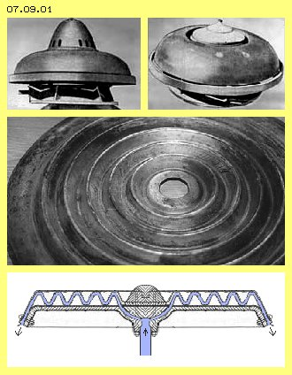
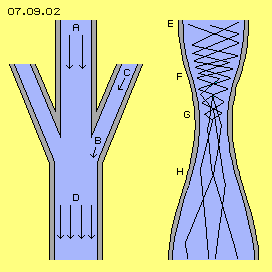
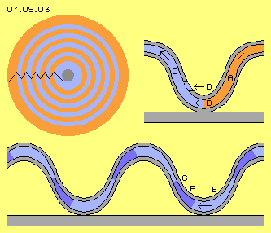
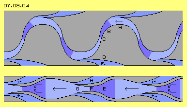
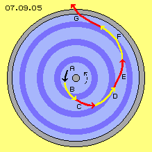
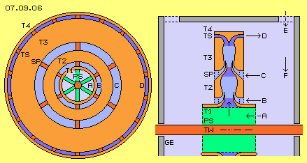
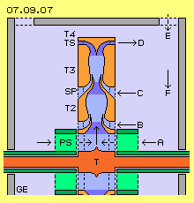

| Alfred Evert | 25. September 2008 |
07.09. Schauberger - Repulsine - Redesign
Viktor Schauberger
At 25. September 2008, fifty years ago, Viktor Schauberger died. This ´Schauberger-Year´ inspired to reconsider work of that great nature scientist and public interests increased. Especially his ´Ufo´ (see known photos, e.g. here at picture 07.09.01 upside) is most striking, as it´s told it did tear away from founding and flow off through roof of workshop.

Central constructional elements were ´corrugated iron´ disks (see picture 07.09.01 at the middle), some of still exist in original state. However up to now, no working reconstruction is known. Between two such disks, mäander-shaped canal is build, within which air is centrifuged (see picture 07.09.01 at bottom). Schauberger used that construction- and motion-principle at diverse machines, e.g. also at a ´Klimator´ for heating or cooling rooms, for ´activate living water´ and a ´home-power-station´.Schauberger all times pointed out function of suction and ´nature-conform´ motion. Many of his applications for water-handling and agriculture were and are successful. However his intension to build an engine for decentralized power supply, running without consumption of common fuels, up to now was not realized. At this chapter, movement-processes of that Repulsine are analysed and proposals for re-construction respective new construction are presented.
There are lots of assumptions concerning function of these double-disks with its concentric ´valleys, flanks and mountains´, e.g. also concerning kind of material and working medium. My workouts however are concentrated only at pure mechanical aspects and at movements of just normal air. Effectiveness of that construction, by view of my considerations and experiences of last months, are based at only two well known effects.
Water-Jet-Pump
At picture 07.09.02 left side, general principle of well known water-jet pump is sketched, which analogue works by air streams. Flow A (at the following named ´main-stream´) exists within a pipe. Aside of pipe an influx B (at the following named ´side-stream´, in German called ´wrong-air´) exists, where additional air flows into pipe. At first, molecules of influx B just ´stand´ locally and represent no stronger resistance than main-stream is affected by friction on inner faces of pipe.
Particles of that ´resting´ air at B are trembling, based at normal molecular movements, thus are flying into all directions from one collision to next. Just by pure chance, any particle will be pushed into direction of main-stream. That particle moves ahead within main-stream, i.e. will not come back to influx-area. At its original location, that particle no longer is available as collision-partner, so is leaving some empty area there, into which following particles will fall. As many particles behave likely, flow C comes up within side-influx.
That pipe downside at D shows wider cross-sectional surface than upside at A. Normally (see Bernoulli formula) such an extension results deceleration of flow and thus ´destroys´ kinetic energy. Here however that wider cross-section if filled up by air mass of side-stream.
All air-particles any time are moving by speed of about 500 m/s, also within a flow. When air is flowing, vectors of particle movements only are showing some more forward in flow´s direction, i.e. instead of ´local´ trembling these movements are wandering some forward. The faster a flow is, the more all movements show into likely directions. Finally at well structured flows, particles fly nearby ´parallel´ and come forward one nearby next. The stronger a main-stream is, the more side-stream will enter with less resistance. Up to sound-speed of about 330 m/s, additional influx aside can follow original main-stream and is integrated without problems.

The original stream practically works like ´suction´, into which particles of additional stream ´disappear´. These pumps work really effective because mass throughput of side-stream practically is done by no additional energy-input. There is no acceleration of particles of side-stream (via power-input) nor deceleration of main-stream. Only some of these influx-particles (by given speed) fall into main-stream and move forward within - and other particles of influx area again fall behind into that direction (with their given speeds).So if an original main-stream exists, mass throughput can be strengthened by skilled merge of flows, where static pressure of side influx partly is transferred into dynamic pressure of structured flow. So kinetic energy of that side-flow is usable e.g. for generating mechanical turning momentum.
Laval-Nozzle
Second effect used here is based on function of Laval-nozzles, where flows of (ultra-) sound-speed are generated. At picture 07.09.02 right side, schematic is sketched a longitudinal cross-sectional view of Laval-nozzle. Motion-processes of such nozzles in details are described at chapter ´06.03. Ultra-Sound-Engine´ and once again at chapter ´07.06. Wind-Tower-Electric-Generator´. At the following thus important function of Laval-nozzles is mentioned only in brief.
Within a pipe E (grey) a flow must exist e.g. by 10 to 30 m/s, so corresponding to strong-wind or storm, nevertheless far below sound-speed. Despite of, air particles move by about 500 m/s and ´tremble´ ahead on much longer ways, like here marked by zigzag-lines. At area of narrowing (at F) particles are rejected from inner face of pipe each shorter distances and thus particles collide after shorter ways and corresponding shorter time. Air there is more dense and particles collide much more frequent.
So probability is strongly increased, several particles collide same time, e.g. two particles transferring their kinetic energies onto a third particle. That third now flies off by ´over-size´ speed, while both previous particles remain rather ´weak´. As these multiple-collisions occur within general forward-motion of flow, that third ´racing´ particle flies through bottleneck G e.g. by sound-speed, while these both ´stand-around´ particles remain within bottleneck. With their slow motions they hang around and thus show few resistance for following collisions, so are good ´candidates´ to become next racers.
At outlet H these Laval-nozzles show wider cross-sectional surfaces, so particles fly into ´relative empty´ space and thus come forward long distances until next collision. These particles fly into likely directions and if there again multiple-collisions occur (by acute angle) particles can move by ultra-sound-speed.
Function of Laval-nozzles is approved and used in many technical applications. That effect might be calculated by formula of flow-sciences by some efforts (or mathematical tricks) - however main-stream sciences won´t agree that´s a case of energy-surplus, not allowed by energy-constant view. Finally by previous explication (respective detailed descriptions of mentioned chapters) real understanding of that process is achieved.
Laval-nozzles manipulate spreading of speed of all particles. Normally, air particles move by about 500 m/s only in average, however each single particle actually has an other speed (where Gauß-spreading is assumed). Within Laval-nozzle that normal spreading is changed as some particles actually move much faster and other particle actually move much slower. Mass-throughput ahead of and behind of Laval-nozzle is constant, however kinetic energy at outlet is increased. There at output, particles fly much faster, within one time-unit however less particles cross that section.
That flow is ideal for merging-in side-stream respective for combination of both effects. Main-stream (off Laval-nozzle) shows relative less density, so particles of side-influx can ´dip´ into main-stream with minimum resistance. Particles of side-stream occasionally are pushed into fitting direction by their normal speed of about 500 m/s (respective come forward by their zigzag-ways at least with sound-speed). Behind Laval-nozzles thus comes up not only flow by sound-speed but also multiple mass-throughput is achieved.
Side-Stream and Laval-Nozzle
Based on these considerations, combination of both effects should result an engine with sufficient performance. Now should be checked, whether and how these effects were realized within Schauberger Repulsine. Picture 07.09.03 upside left shows a view on these ´waved disks´ where downward showing flanks are marked red and upward showing flanks are marked blue. Black zigzag-line represents upward-downward track of air at its way from centre to border of that rotor.

That picture upside right shows part of canal between both disks (grey), which are mounted at plan supporting disk. When disk is started turning, also air will become turning around system axis, based on friction of air at inner faces. Canal between both disks practically is a disk-shaped space with wave-shaped contours. From centre (right), air flows downward-outward (A, red), can fly outward unhindered within valley (B), afterward flowing upward again (C, blue) towards border (left) of disk.Here, cross-section of canal is drawn constant. The further outward air wanders, the wider space is available, i.e. density of air decreases. Air particles all times wander towards area of less density, because there they can fly longer distances between collisions. Schauberger had installed some openings D within upper sheet, through which ´wrong air´ was allowed to enter canal. So mass-throughput is increased by that side-stream, corresponding to previous considerations.
Picture 07.09.03 at bottom shows canal, where contours of both disks (nearby) are sinus-shaped. Resulting are sections with increasing cross-sectional surface (light blue) and sections with decreasing cross-sectional surface (dark blue). At middle of each up- resp. downward showing flank, bottlenecks are build. So that canal from inside towards outside represents a sequence of Laval-nozzles.
Behind a bottleneck, air can flow into relative empty space (like e.g. at E) and especially through ´valleys´ or over the ´mountains´, air can flow outward unhindered. Afterward, air is dammed-up at area of more narrow cross-sections (like at F) and finally can move through bottleneck (like at G) by sound-speed, again flying into wider space. If both wave-disks were build by such contours, effect of accelerating flows by Laval-nozzles is realized at that Repulsine.
Laval-Nozzle plus Side-Stream
Schauberger mostly mounted these waved-sheets at plane supporting disk (grey beam at previous picture), so openings for ´wrong air´ could be installed only at one side. Naturally canal could be build also between disks more thick with corresponding contours, like sketched upside of following picture 07.09.04.

Here contours are mirrored (each phase-shifted), however no longer sinus-shaped. Again there are sections with increasing cross-section-surface (like at A, light blue), where upside and downside air can fall outward relative unhindered. At the other hand, now bottleneck is arranged more narrow (like at C), so in front of comes up area of high density (like at B, dark blue). Additional influx now could come through openings from both sides (like at D).That construction thus would allow effect of Laval-nozzle within canal and also increased mass throughput is achieved by additional influx at both sides. However, at least at this drawing, ´wrong air´ enters little bit too late, because near most wide cross-section. Now must be checked whether that waved tracks are necessary at all or if no clearer design and easier construction is possible.
Flat symmetrical Disk
A suggestion for solution is shown at picture 07.09.04 at bottom. Canal here is build between two symmetric constructional elements. Air wanders from centre to border (here form right to left) at rather straight way. Cross-section of canal is a sequence of narrowing and extending sections (here probably over-drawn).
The air is dammed-up at area of narrowing (like at E, marked dark blue), air passes bottleneck (like at F) and flies outward into following area of wider space (like at G, marked light blue). Thus Laval-nozzles were build, all around, where air is accelerated up to sound-speed. Short behind bottlenecks, side-stream from both sides is ´sucked in´ (like at H), so stronger mass throughput is achieved.
Suction works up to sound-speed, so one could use relative small number of Laval-nozzles (like here these three instead of fife at upside zigzag-track). At the other hand here is shown, also influx aside could be nozzle-shaped, so ´wrong air´ enters by fitting speed and direction into main-stream.
General Track of Flow
By that version more simple, now one can understand why Schauberger´s Repulsine was self-accelerating. Picture 07.09.05 shows a view from aside towards rotor, which is assumed left-turning (like always here). Ring-shaped areas of narrow canal-sections are marked dark blue, areas of extended cross-sections are marked light blue. General track of an air particle, representing all air movements, here is marked by black, yellow and red arrows.

When starting system, air within canal also becomes rotating around system axis, based on friction at canal inner faces. Air moves forward within space (in turning sense), at first however air moves backward relative to rotor. Afterward in running mode, air however will turn faster than rotor, as discussed later.Air enters canal by central opening A and is pressed into area more narrow (dark blue). There exists relative high density and particles are accelerated strongly in turning sense of system, direct by friction at inner canal surfaces or indirectly via mutual collisions. These particles thus in principle move at circle-track, from which they can move outward through bottleneck rather slow. As a whole, thus particles move at an opening spiral track, like marked by yellow arrow B.
Within area of bottleneck (transit from dark to light blue) movement of particles is directed outward-forward, so tangential or some more outward. Flow strongly becomes accelerated within bottleneck and particles can fly outward into following area of wider cross-sectional surface (light blue) relative unhindered, like marked by red arrow C, in nearby tangential direction. At this area now additional influx from aside enters main-stream (here not drawn), so wider space further outside is filled up by additional air masses.
Generating Turning Momentum
That air-mass with its high speed now hits onto dammed-up air in front of next narrowing (dark blue). That stream can not move further tangential-outward, but is redirected some more into circled track (with corresponding increased angle-speed). Opposite, that air-mass by itself presses air in front of narrowing forward in turning sense. Air can escape through bottleneck outward only relative slow, like here marked by yellow arrow D.
That pressure within bottleneck is directed further forward and consequently now air-particles fly off bottleneck straight forward into next wide space (light blue), like marked by red arrow E.
That movement process is repeated. However finally at third narrowing (dark blue), air no longer will be accelerated by friction of rotor surfaces. Air-masses here move faster forward than rotor is turning there. Via friction now rotor is accelerated by that fast moving air with its high density in front of next bottleneck, like marked by long yellow arrow F.
After relative free flight through last extended section (light blue, with red arrow G) surplus speed via friction is transferred into turning momentum within a final narrow part of canal (grey, like upside at pictures of wave-shaped Repulsine).
That movements process describes reason, why Repulsine was able to turn up until sound-speed. If rotating air of outlet of that rotor is guided back to central inlet, main-stream there already is turning and no longer must be accelerated in turning sense. If that backflow is not controlled, system can turn up self-accelerating until self-destruction. If that outlet-air is guided downward, that ´Ufo-Repulsine´ can fly off (where additional effects of ether-motions come up, based on fast rotation of solid bodies - however this can be discussed only by many new chapters of Ether-Physics).
Repulsine with flat Rotor
Picture 07.09.06 shows previous flat rotor with its symmetric constructional elements, now with some additional elements. At picture left, side-view at rotor is sketched, at picture right side longitudinal cross-sectional view through machine is sketched (only upper part by some larger scale). That rotor is drawn with horizontal shaft, which is beard within housing GE (grey). This rotor functions as turbine (red), some parts however function as pump (green).
These drawings only show construction in general and are not true to scale. For example, canal here has only three bottlenecks, while in real machines more (and smaller) nozzles could be used. At this version, canal is build between four ring-shaped elements T1 to T4 (light red). These constructional elements are fix connected by spokes SP (dark red, her e.g. six).

Inlet of main-stream enters through openings between turbine-shaft TW (dark red) and first ring-element T1 (see arrow A). Between shaft and that ring, pump-blades PS (light green) are installed, transporting and pressing air from both sides into first bottleneck (dark blue). Afterward, air flows into wider space, where mass throughput is increased by influx of ´wrong air´ through openings between first and second ring-element (T1 and T2, see arrow B).These air masses are moving forward-outward into next narrowing, again are accelerated within next bottleneck, afterward flying into next extension area, where additional air enters from aside (see arrow C). That side-influx thus occurs through ring-shaped openings (light blue) between these ring-elements (T1 and T2 plus T2 and T3), only interrupted by spokes SP.
As mentioned upside, air is accelerated within nozzles in direction forward-outward, sooner or later beyond turning-speed of rotor. These fast flows affect thrust at canal-surfaces (by friction, direct or indirect), especially at area of narrowings and relative high density there. Before air is leaving turbine, once again that thrust-situation should be organized. In addition, here that last narrowing is curved, so flows of radial level are redirected into axial direction towards both sides of rotor.
Air flows off turbine (see arrow D) through that outlet (dark blue) between ring-elements T3 and T4. Both ring-elements again are connected by spokes SP. However, within that outlet well could be installed additional turbine-blades TS (dark red). Via redirection of flow at these blades, additional turning momentum is generated at long lever arm.
Air of main-stream ´disappears´ through central inlet-openings (transported by pump-blades PS) and also side-stream is ´sucked´ through openings of wrong-air. Air following from outside towards centre (see arrow F) will not flow radial inward but at spiral tracks inward curved. Air still is turning at outlet of turbine. That rotation however should be slower, so a ´whirlwind´ comes up. Static pressure at circumference thereby is transmitted into kinetic pressure of faster turning flows near centre. System should not be closed hermetical, but housing should be partly open, so atmospheric pressure (see arrow E) weights on inward directed vortex, pressing and accelerating flows towards centre.
Controlling-Problems

Based on previous considerations, Schauberger Repulsine achieved acceleration of flows by Laval-nozzles and achieved increased mass throughput by influx of wrong air, both demanding no additional energy-input. By previous relative small and symmetric rotor, these effects are used ´straight´ and consequently.Bibliography of Viktor Schauberger tells, diverse versions of Repulsine (or Repulsator) were build in 1940 and following years, in the fifties also several ´Heimkraftwerke´ (home-power-stations), however all times ´regulation of revolutions´ made problems. Obviously it´s hard to build well controllable engine by only one rotating constructional element. It might make sense to use one (controllable) component for drive and an other component for taking off turning momentum. So functions of pump and turbine should be realized by different assemblies.
Picture 07.09.07 once more shows previous longitudinal cross-sectional view, however now that disk-like rotor functions only as turbine T (red). Ring-shaped elements of turbine still are connected by spokes SP, which now reach inward to turbine-shaft. At both side now pumps are installed at separated hollow-shafts (dark green) with corresponding pump-blades PS (light green). These pumps transport air into first narrowing of turbine and air already is rotating in turning sense of system.
Mass-throughput of main-stream is controlled by revolutions of pumps. If pumps stand still, air through pump-blades moves contrary to general turning sense, so system will slow down and stop.
Re-Design und Re-Production
Viktor Schauberger nowhere had clearly defined that terminus ´Repulsine´ and also had never explained understandable decisive movement processes of that conception. Instead of he mentioned, quality of material would be important and transformation of working medium would occur - still not to grasp by common knowledge. So it´s not astonishing, many most different explanation of Repulsine exist and some of still sound rather mysterious.
I suggest at first to concentrate at simple fluid-mechanic. I think these two well known effects of ´water-jet-pump´ and ´Laval-Nozzle´ respective combination of both processes is decisive ´secret´. That will do for accelerating flows and increasing mass throughput - without corresponding strong input of energy. It would be fine if based at that new understanding, now finally a running Repulsine could be re-constructed.
| 07.10. Typhoon-Turbine | 07. Fluid-Machines |